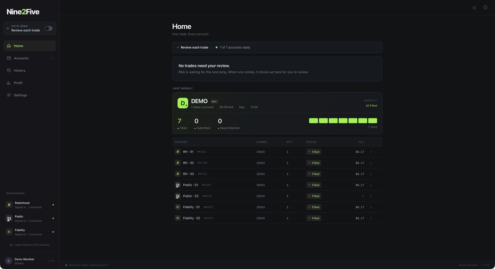

One trade.Every account.
RSA sends one order to every account you hold at Robinhood, Public, Fennel, Fidelity, Schwab, SoFi, Webull and WellsTrade, and tells you what happened at each one.
Which Mac? Apple menu, About This Mac: "Chip" means Apple Silicon, "Processor" means Intel.
Free to download. Opening it needs a Nine2Five Premium license key. Get one on Whop.

Three Steps
Download and Open
Pick your computer above and run the installer. The first open has one extra click, shown below.
Paste Your License Key
On Whop, open Orders, then Nine2Five Premium, and copy the key. Paste it once. RSA remembers it.
Add Your Brokers
In Accounts, press Set Up on each brokerage. Your logins stay on your computer and never leave it.
Your Computer Will Ask Once
Mac
- Open the downloaded file, then drag RSA onto the Applications folder next to it.
- Open it. If macOS says it can't check the app, open System Settings, then Privacy & Security, and press Open Anyway.
- If macOS asks to let RSA find devices on local networks, either answer is fine.
- After that it opens like any other app.
Windows
- Open the downloaded setup file. If a blue SmartScreen box appears, press More info, then Run anyway.
- Press Next through the installer. No admin password needed.
- RSA is now in the Start menu (and on the desktop, if you ticked that box).
Before You Trade
Hands-Off Once It's On
Turn on Auto-Send once and set your limits. While RSA is open and connected, a fresh ping that fits your limits goes to your signed-in accounts by itself, after a short countdown you can stop. Anything else waits for you to review.
Google Chrome Needed
Fidelity, Schwab, SoFi and WellsTrade sign in through your installed Chrome, in their own windows.
One Key, One Computer
Moving to a new computer? Press Reset License Key in your Whop orders, then paste the key there.